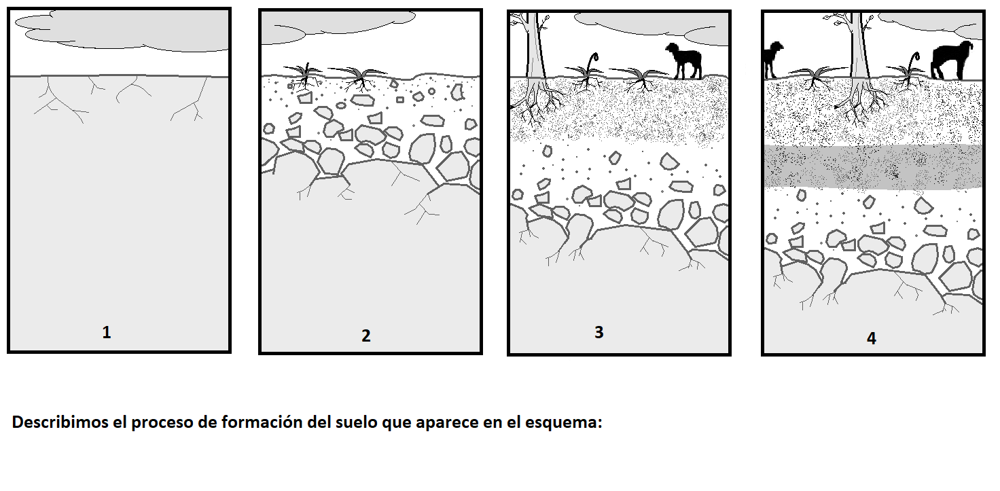
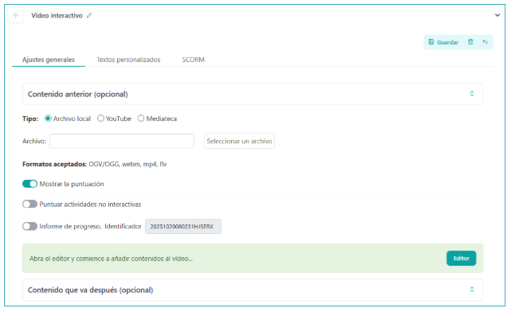
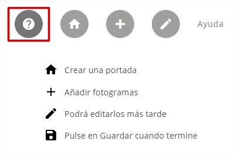
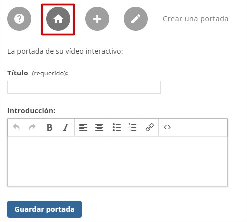
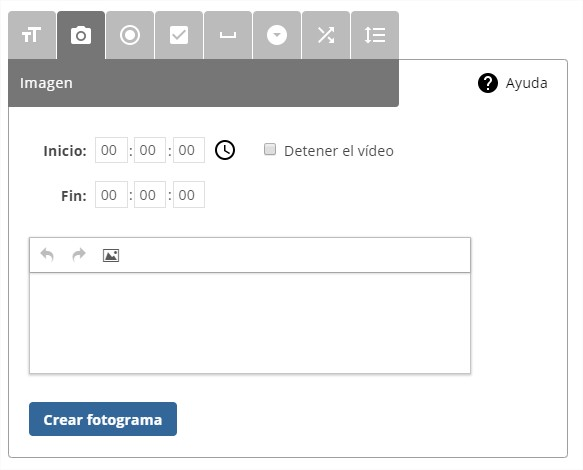
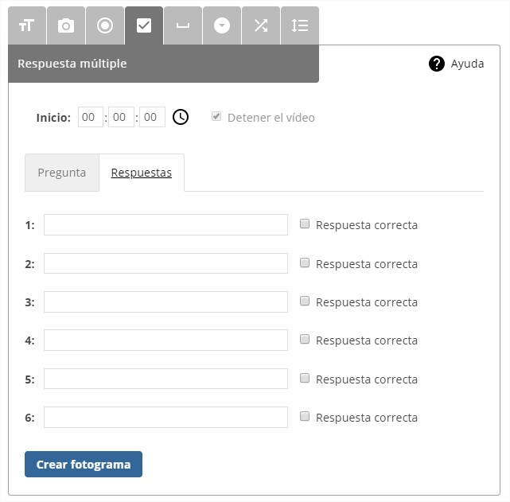
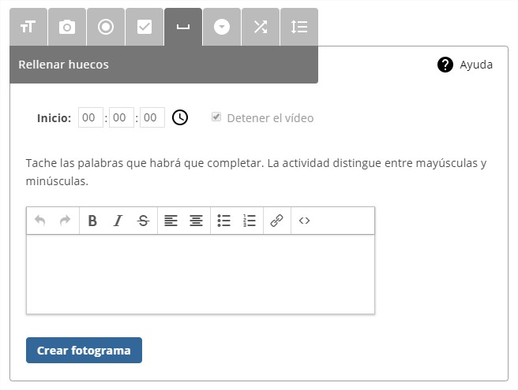

What is it?
This iDevice allows incorporating a video into our resource (from our computer or via a URL) and introducing different types of questions throughout it, pausing playback until the user answers or continues.
Usage example
Video about soil
Image source: Soil formation.. Sinnya . CC BY-SA 3.0 / Soil horizons. Carlosblh . CC BY-SA 3.0-


How is it done?
When selecting the iDevice “Interactive video“ from the iDevice list, the following will be displayed in our eXeLearning:

Let's see the content of these tabs in the Interactive video iDevice:
General settings
In this section we will have to choose the video source, being able to choose between three possible options: Local file, YouTube or EducaMadrid Media Library.
- Local file: as a local file, the following formats are accepted: OGV/OGG, webm, mp4, flv. The selected file will be incorporated into the package (.elp).
- YouTube: to link a YouTube video, only its URL is needed. Example: https://www.youtube.com/watch?v=v_rGjOBtvhI
- Media Library: to link a video from the EducaMadrid Media Library, we need its URL. Example: https://mediateca.educa.madrid.org/video/3vmgyeluy8c35xzj
Once the video source is selected, we will be informed that we can now open the video editor to generate interaction with it. In the case of local files, it will be necessary to save the iDevice first, and then edit it. This ensures that the video is included in the .elp. In any case, the iDevice provides the necessary instructions. Having selected (or selected and uploaded the video, in the case of a local file), we can start adding interactivity:

Show the score: option that allows determining whether to show the user the score obtained during playback and answering the questions and/or activities performed during the interactive video.

Custom texts
In this section, which we only see if Advanced Mode is checked, we can customize the default texts that make up the iDevice.
SCORM
In the "SCORM" tab, we can determine whether we want to save the results obtained by our students and under what conditions we want to do so when we export our content.
It should be noted that this save option will only be available for SCORM exports and when we publish our content on platforms such as Moodle or other SCORM-compatible LMS platforms.
The video editor
Once the source of the video on which we want to add interactivity is configured, we open the video editor, which looks like this:

In it we find two sections of options. In the upper right part we have the options to save and exit editing, and below, to the right of the video, the following options are presented:
Help: shows brief information with each of the editor's options.

Create a cover: allows setting a title and a small introduction or an image that will serve as the cover for the video. An image can also be included instead of text.

Create a frame: allows introducing a frame parallel to the video to show information or generate an activity for the user.

The tool is very versatile and allows creating frames of 8 different types:
Text

In the upper right part we have a help button that indicates to us:
- Indicate at which second the frame should be displayed (Start)
- If you do not want the video to stop, indicate when the frame should be hidden (End)
- Click on
 to get the current second
to get the current second - Text: Write a text. You can add lists, links...
Note: The temporal configuration is similar in the rest of the frame categories, except in those where user action is required, where the option to stop the video will be mandatory.
Image

Very similar to the text type in terms of operation, but it will only allow us to insert an image, which will be displayed at the specified moment. The end user will see the image and will be able to open it in a new browser window.
Single answer

Multiple answer

Fill in the gaps

Dropdown activity

Match elements

Unordered list

. Video Editor (CC BY-SA)